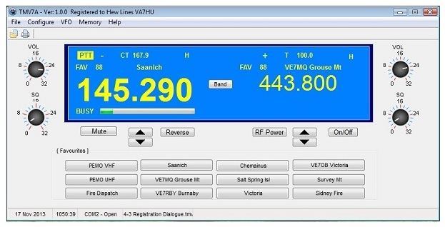

W_1
The TMV7A.EXE application has been developed to provide for computer control of the Kenwood TM-V7A VHF/UHF transceiver. In addition. it replicates many of the LCD display capabilities on the computer screen to compensate for LCD displays that have become un-useable on the transceiver.
In developing the software, it was determined that by moving as much of the transceiver functionality as possible, from the TM-V7A to the computer, several enhancements could be made:
Detailed TMV7A.EXE functionality is described in the General Features section.
It became apparent during early Beta testing that the design concept used in the development of the software was not fully understood, and was obviously not fully explained. Initially the concept was to simply "replace" the transceiver LCD display with a "pseudo" LCD display on the computer. This was to substitute for Kenwood LCD displays that had "deteriorated" and eventually failed.
My display has completely failed and there is nothing intelligible displayed on it at all. However, the LCD display on the TM-V7 transceiver in the truckworks fine. Go figure !
As I developed the software, it quickly became apparent that the lack of software control commands in the transceiver, coupled with the lack of documentation on any commands that were available was going to be a limiting factor in what could be done. Based on a number of factors, I decided that in able to effectively control the operation of the radio, I would have to maintain all of the data on the computer and simply use the radio as a transmitter and receiver as much as I could. This provided a number of advantages.:
As a result of these design concepts and considerations, it is important that the user understand that the TMV7A application is not simply a "Replacement Display", but is in fact a "Replacement Control Head".
This concept requires that the transceiver LCD display and controls, NOT BE USED. The radio display WILL NOT accurately display the software configuration, and any changes made to the physical radio MAY NOT be reflected back to the software display. Needless to say, things can get very ugly very quickly !!
Created with the Personal Edition of HelpNDoc: Full-featured Documentation generator